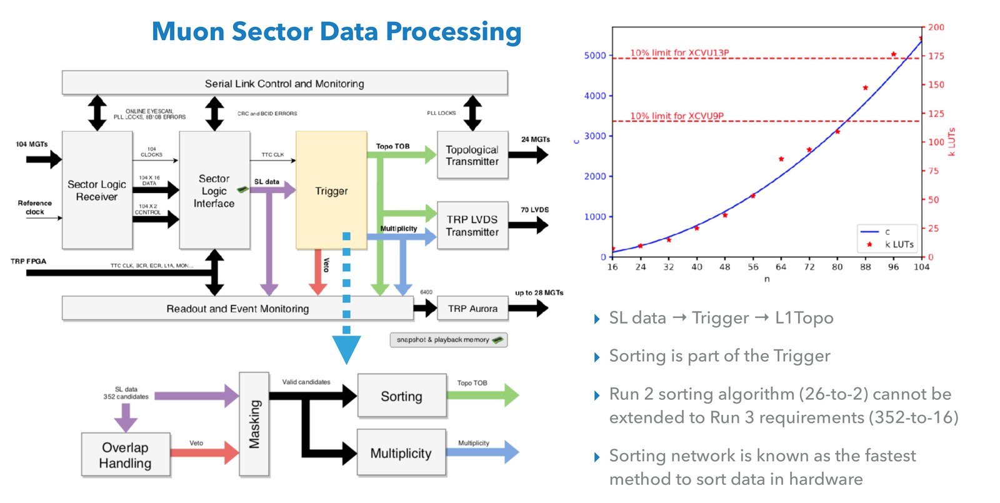
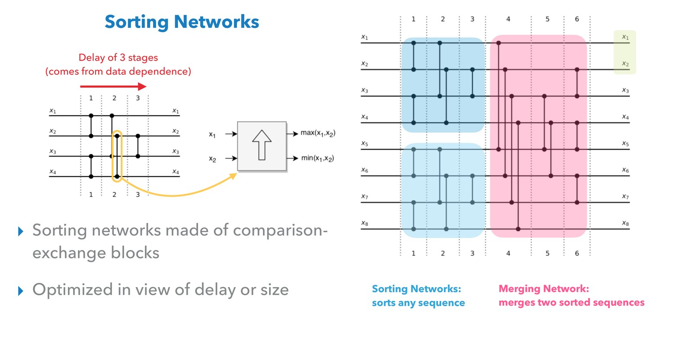
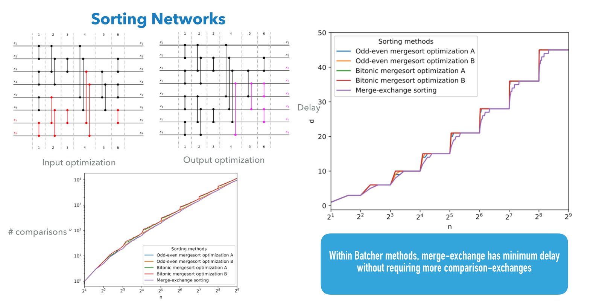
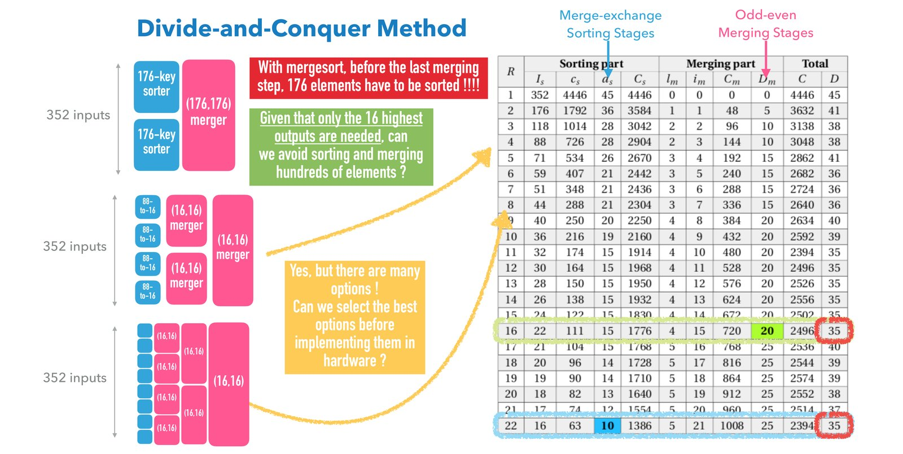
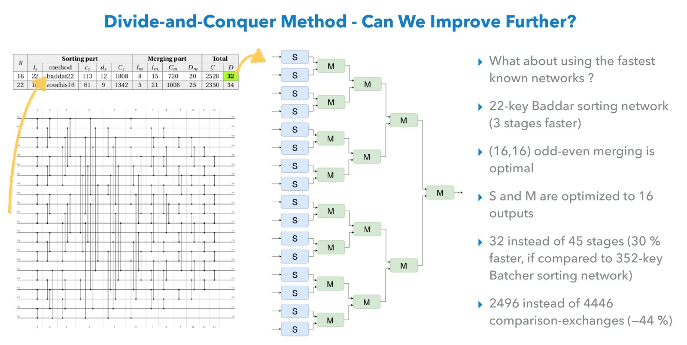
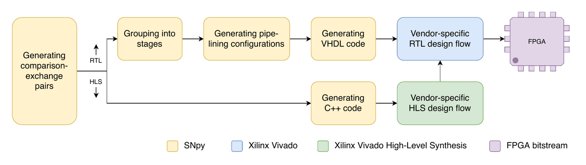

The upgraded muon interface of ATLAS (MUCTPI) has to pick the 16 muon candidates with the highest transverse momentum out of 352, in every bunch crossing, 40 million times per second, always with the same delay. The method used in the previous system could not be scaled to that size. This post describes how I arrived at a sorting network of 32 steps, the Python package that made the search possible, and what happened when I implemented the same network twice, once in VHDL and once in C++ for high-level synthesis.
Why the old method stops working
The Run 2 firmware chose 2 candidates out of 26 by making every pairwise comparison at once: 325 comparators, then logic that finds the candidate that wins all its comparisons. For 352 inputs the same scheme needs 61,776 comparators. Worse, the outputs cannot be found in parallel, because finding the second highest requires knowing the first, and so on sixteen times.
I tried it anyway, to have numbers. Above 104 inputs synthesis had not finished after a week. Above 88 the design could not be routed. At 88 inputs the combinational delay was already 120 ns, 60% of the latency budget of the whole board.

Sorting networks
A sorting network is built from one element, the compare-exchange: two values go in, the larger comes out on one line and the smaller on the other. The network is a fixed list of such operations on fixed pairs of lines. Operations that do not share a line can run at the same time and form one step. In hardware the delay is set by the number of steps, not by the number of comparisons.
Two properties make this a good fit for a trigger. The sequence of operations does not depend on the data, so the latency is the same for every input. And a network can be checked with the zero-one principle: if it sorts every sequence of zeros and ones, it sorts every sequence of numbers.

Batcher's constructions from the 1960s give a network for any number of inputs and are still the fastest practical general method.
SNpy
To work with networks of this size I wrote SNpy, a Python package that generates sorting and merging networks, optimises them, combines them, draws them as Knuth diagrams, and writes them out as VHDL and as C.
The optimisations remove compare-exchange elements that are not needed in a particular application: those connected only to unused inputs or outputs, those made redundant because part of the input is already sorted, and those that only put in order outputs that need not be in order. SNpy also extracts the number of steps and of comparators from a generated network, which allows candidates to be compared before any of them is implemented.
A first study with it compared Batcher's three constructions for every size from 2 to 512 inputs. Merge-exchange always gives the lowest delay and never needs more comparators than the other two.

Divide and conquer
A 352-input Batcher network has 45 steps and, after removing what is not needed for 16 outputs, 4,446 comparators. Most of that work is wasted. Before its final merge, such a network has fully sorted two halves of 176, of which only the top 16 of each can matter.
So the input is split into R groups. Each group is sorted in parallel by a small network that outputs only its top 16. The groups are then merged two by two in a binary tree of merging networks, each taking two sorted lists of 16 and returning the top 16. Candidates that cannot be among the final 16 are dropped early.
The number of groups can be anything from 1 to 22. Beyond that a group would have fewer than 16 inputs. SNpy generated and optimised the networks for all 22 options and tabulated steps and comparators. Two effects pull in opposite directions: more groups means smaller and faster sorters, but the merging tree is most efficient when the number of groups is a power of two. The two best options were 16 groups of 22 and 22 groups of 16, both with 35 steps.
The table that SNpy produced for this search is on the slide below, with the two winners circled. The left column of the drawing shows the reasoning in pictures: a plain merge sort of 352 inputs ends with a merger of two lists of 176, while the divide-and-conquer version only ever merges lists of 16.

For exactly those two sizes, networks faster than Batcher's are known: a 16-input network by Van Voorhis (1972) and a 22-input network by Sherenaz Al-Haj Baddar (2009), which takes 12 steps where merge-exchange takes 15. With the Baddar network, the option with 16 groups comes down to 32 steps: 12 for sorting and four levels of 5-step mergers. The merging part cannot be improved, because Batcher's odd-even merger is optimal for two lists of equal power-of-two length.

The result has 32 steps where the Batcher network has 45, and 2,528 comparators where it has 4,446. Prof. Al-Haj Baddar later sat on my thesis jury.
Checking the network
With the zero-one principle, the 22-input sorter was tested with all 222 binary inputs and the merger with every pair of sorted 16-element lists. That is sufficient. The complete network cannot be tested exhaustively, since it has 2352 binary inputs, so a random sample of 230 was run as well, without an error.
The same network, twice
SNpy produces the list of 2,528 compare-exchange pairs. From there the two implementations go separate ways.

For RTL, the pairs are grouped into the 32 steps, and I wrote configurable VHDL in which a generic selects after which steps a pipeline register is placed. I had hoped to let the tools distribute the registers by retiming. With two different synthesis tools the registers never moved more than a few logic levels from where they started, so the pipelining is described explicitly.
For HLS, the C++ applies a compare-exchange function to a constant array holding the 2,528 pairs. Parallelism and pipelining are not written down. The tool infers them from the data dependencies and from a directive that sets the latency.
The logic runs at 160 MHz, four times the bunch-crossing rate. For each approach an automated flow built 64 variants, differing in latency, in whether the full candidate data or only the sort key travels through the network, and in a few tool options.
Both approaches meet timing with five clock cycles: 31.25 ns, about 15% of the budget. The best HLS variant has a worst negative slack of 540 ps against 370 ps for the best RTL one, uses 54,216 look-up tables against 63,593, and 23,144 flip-flops against 20,281, at the same estimated 6.3 W.

The difference was in the effort. I estimate that the RTL design took at least ten times longer. The HLS test bench is ordinary software and can find functional errors before synthesis. RTL variants took up to a day to build where the HLS equivalent took under an hour, and some RTL variants had not finished after 30 days.
What I conclude, and what I do not
This comparison covers one design: wide, regular, feed-forward, with no control logic. For that kind of block, HLS gave slightly better results for much less work. I would not extend the numbers to other kinds of design without measuring again.
SNpy is open source on GitHub and PyPI. The complete network, with the table of pairs for each step, is in chapter 7 of the thesis (PDF).